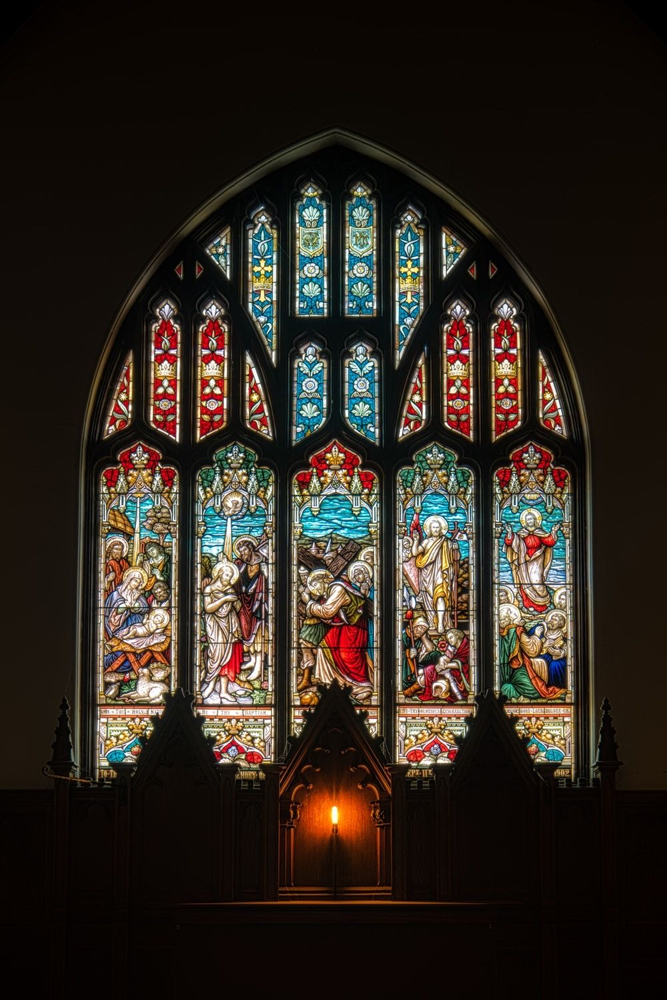
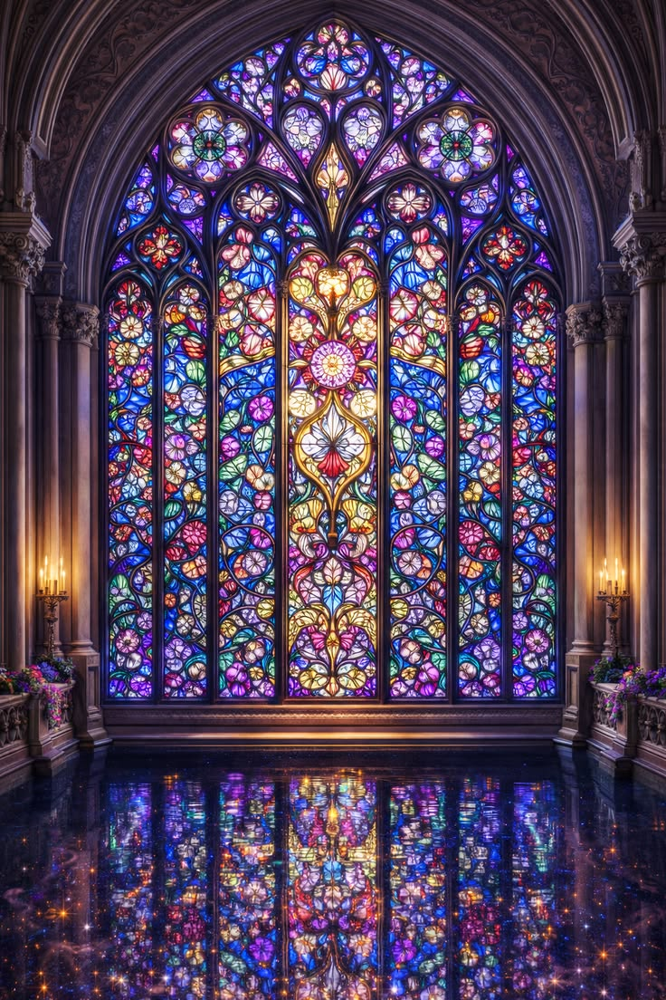
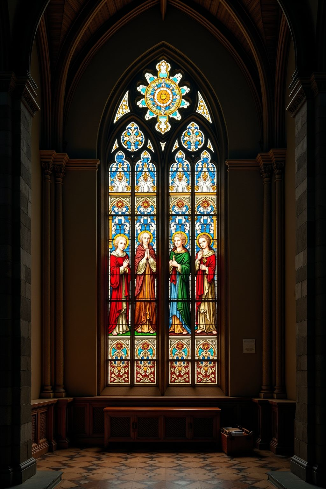
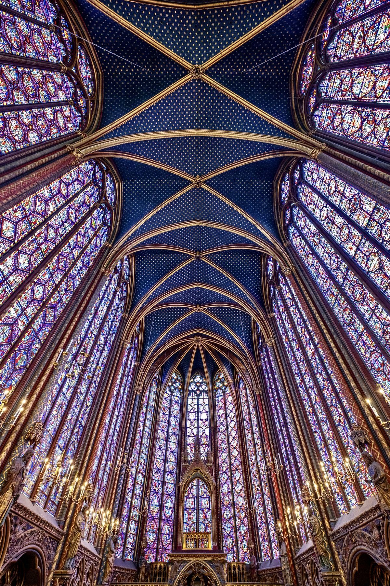
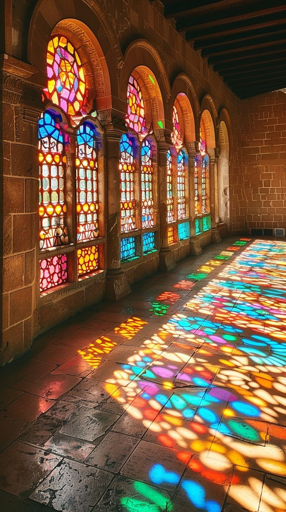

About
はじめに
光を通して、色と物語を映し出すステンドグラス。 中世ヨーロッパの教会で大きく発展し、時代とともにその姿を変えてきました。 美しい光の芸術が歩んできた歴史をたどります。
Articles

ステンドグラスのはじまり
色ガラスの歴史は古代までさかのぼりますが、現在につながるステンドグラスの技法は中世ヨーロッパで発達しました。12世紀には、色ガラスを鉛でつないだ窓が教会を鮮やかに彩るようになります。

ゴシック建築と黄金時代
12世紀以降、ゴシック建築の発展によって教会の窓は大きくなり、ステンドグラスも華やかになりました。聖書や聖人の物語が描かれ、光とともに人々へ宗教の教えを伝える役割も担いました。

ルネサンスと表現の変化
15～16世紀になると、ガラスに描く技術が発達し、人物や風景をより細かく表現できるようになります。ステンドグラスは次第に、色ガラスを組み合わせる芸術から「ガラスに描く絵画」に近い表現へと変化していきました。

19世紀の復興
一時衰退していたステンドグラスは、19世紀のゴシック・リバイバルによって再び注目されます。中世の技法が研究・復興され、ウィリアム・モリスらによって教会だけでなく住宅の装飾にも広がりました。

現代のステンドグラス
20世紀以降、ステンドグラスは伝統的な宗教画からさらに自由になり、抽象的なデザインや現代建築にも取り入れられました。長い歴史を受け継ぎながら、現在も「光そのものを使う芸術」として新しい表現が生まれています。
時代別に見るステンドグラス
| 時代 | 主な特徴 | 主な用途・場所 |
|---|---|---|
| 古代～初期中世 | 色ガラスや装飾ガラスが使われる | 建築・装飾 |
| 12～14世紀 | ゴシック建築とともに大きく発展 | 大聖堂・教会 |
| 15～16世紀 | 絵画的で細かな表現が発達 | 教会・公共建築・邸宅 |
| 17～18世紀 | ヨーロッパで人気が衰える | 装飾など |
| 19世紀 | ゴシック・リバイバルで復興 | 教会・住宅 |
| 20世紀～現代 | 抽象表現などデザインが多様化 | 教会・公共施設・現代建築 |